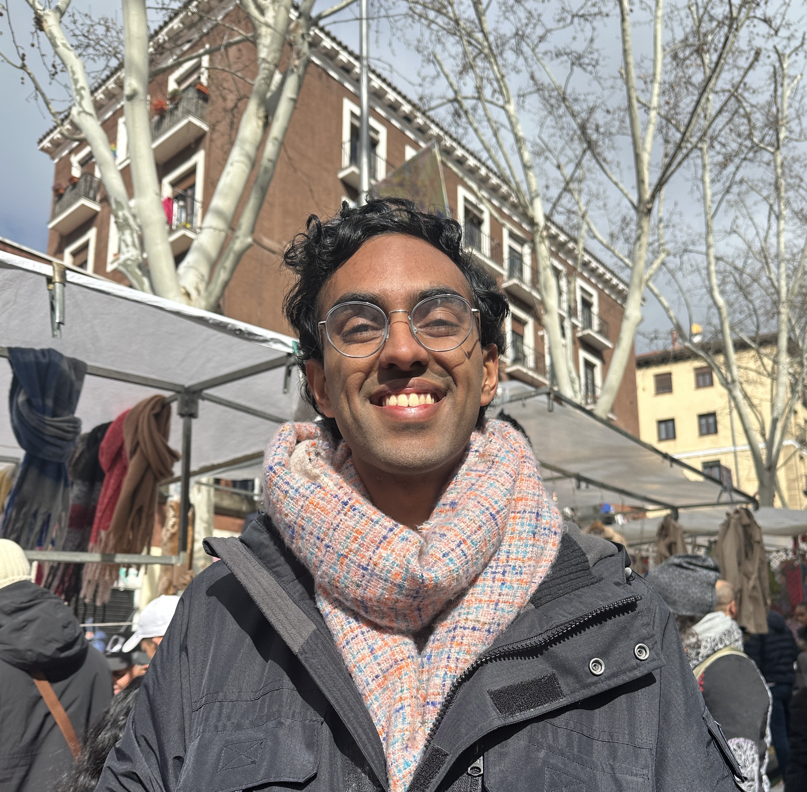
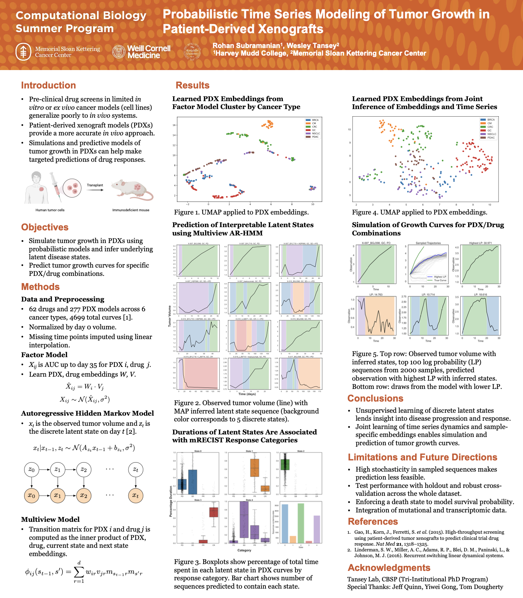
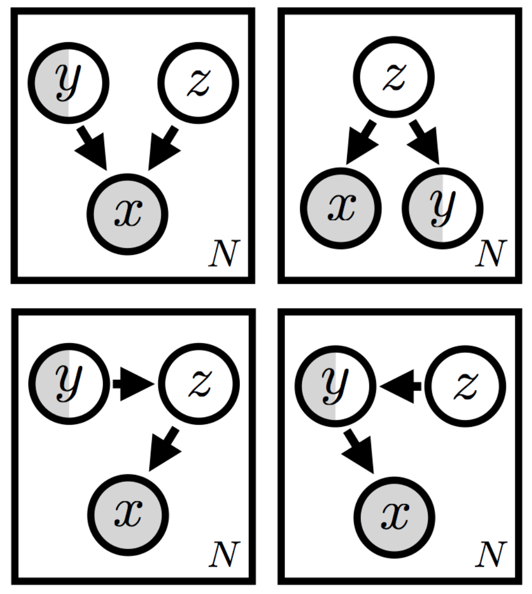
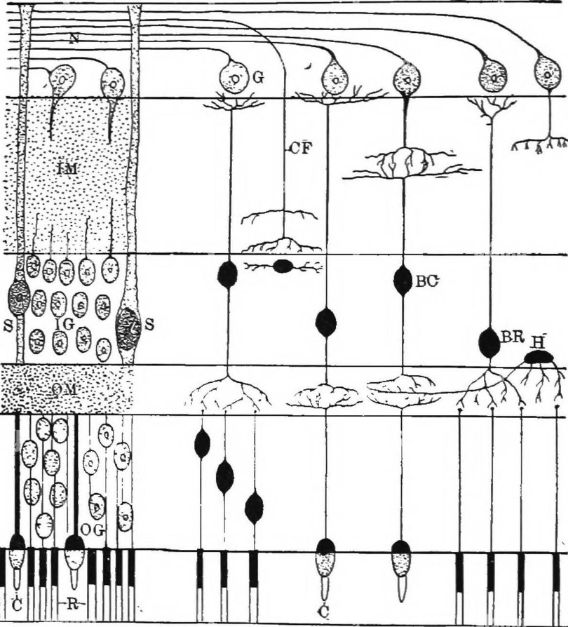

|
Rohan Subramanian I'm a senior at Harvey Mudd College in Claremont, where I study computer science with a humanities concentration in music. My interests lie at the intersection of machine learning and biology. Most recently, I spent a summer at Memorial Sloan Kettering Cancer Center working with Wesley Tansey in Computational Oncology. At Harvey Mudd, I've had the privilege to work with Gabriel Hope on deep generative models and Danae Schulz on parasite gene regulation. Previously, I worked with Debashis Sahoo at UC San Diego, where I investigated Boolean network models of biological systems. |
 |
{kind=link}
Research InterestsI am broadly interested in machine learning for science. On the machine learning side, I aim to make graphical models and deep generative models more robust and interpretable. In terms of science, I'm interested in applications to single-cell biology, particularly in understanding cancer and inflammatory diseases. |
My WorkPublications, presentations, and other research projects. |
|

|
Probabilistic time series modeling of tumor growth in patient-derived xenografts
Rohan Subramanian, Wesley Tansey Computational Biology Summer Program Final Symposium, 2024 Poster / Abstract |
|

|
Semi-supervised learning with constrained deep generative models
Rohan Subramanian, Sahil Rane, Saheli Patel, Gabriel Hope January 2024-present Presentation Notes / Code |

|
Boolean networks reveal opposing roles of SLC22A5 and SLC22A15 in inflammatory bowel disease
Rohan Subramanian, Sanjay Nigam, Debashis Sahoo Cold Spring Harbor Biological Data Science Meeting, 2024 Related manuscript in preparation for JCI submission Poster / Abstract |
|

|
Boolean implication analysis of single-cell data predicts retinal cell type markers
Rohan Subramanian, Debashis Sahoo BMC Bioinformatics, 2022 Paper |
Miscellanea |
Hacks |
MuddBots: talk to your textbooks (Track Winner, LAHacks 2023)
Breeezy: connect with outdoor enthusiasts (Finalist, HackTech 2024) |
Teaching |
Academic Excellence Tutor (2023-present): Introduction to Biology, Molecular Genetics
Teaching Assistant: Principles of CS (FA23), Algorithms (FA24), Neural Networks (SP25) |
|
Inspired by a template from Jon Barron. |